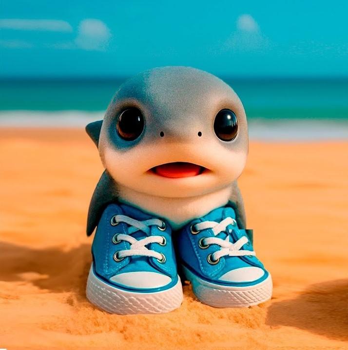
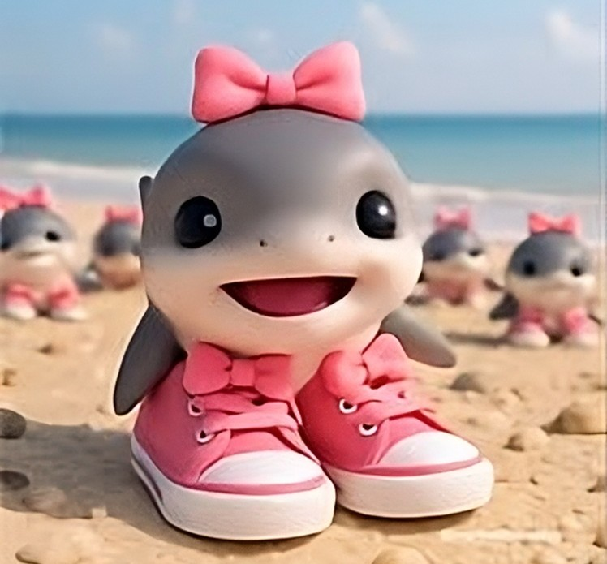

¿Qué son los tralaleritos?
Los Tralaleritos son parte del fenómeno llamado “brainrot italiano” (Italian brainrot), un tipo de meme viral que usa imágenes generadas por inteligencia artificial, estética absurda, nombres italianizados improvisados, y audios con voces sintetizadas en tono casi surrealista.
 Historia¿Qué son los tralaleritas?
Las Tralaleritas son básicamente la versión femenina o “gemela femenina” de los Tralaleritos, dentro del universo del meme Baby AI Italian Brainrot Animals.
